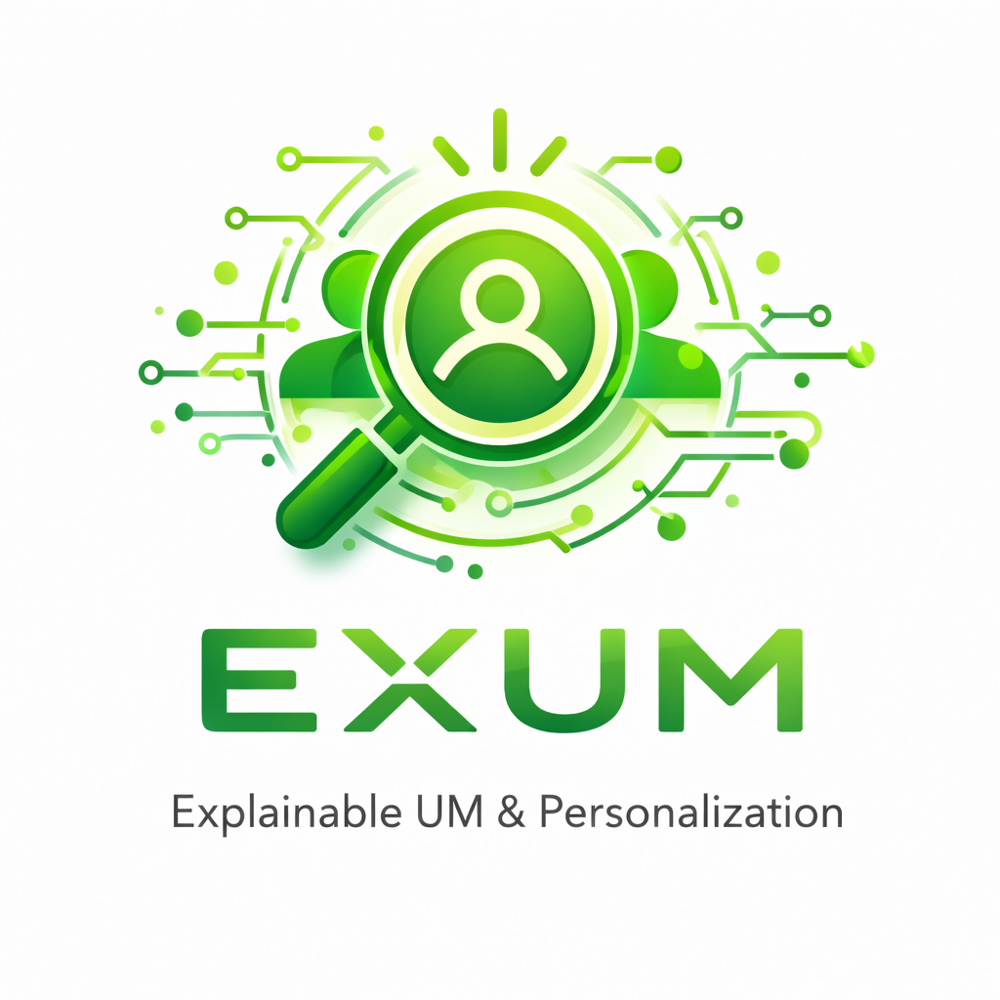

=================
For any information: marco.polignano@uniba.it, cataldo.musto@uniba.it
Please note: All deadlines refer to 11:59 pm AoE (Anywhere on Earth) time.
Topics of interest include but are not limited to:
We encourage submissions investigating novel methodologies for building transparent and scrutable user models using heterogeneous personal data. The following submission types are accepted:
Submission site:https://easychair.org/my2/conference?conf=exum2026
All submissions will be peer-reviewed by at least two committee members based on originality, significance, relevance, and technical quality. Submissions are single-blind. Papers must follow the CEUR-WS one-column format (LaTeX preferred).
CEUR Templates: Offline version: http://ceur-ws.org/Vol-XXX/CEURART.zip Overleaf version: https://www.overleaf.com/latex/templates/
Microsoft Word must not be used. The Libertinus font family is mandatory. Papers not following the format will not be eligible for publication in CEUR-WS.
Declaration of Generative AI: Each paper must include a mandatory Declaration of Generative AI in accordance with the CEUR-WS Generative AI Policy.